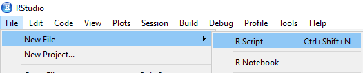
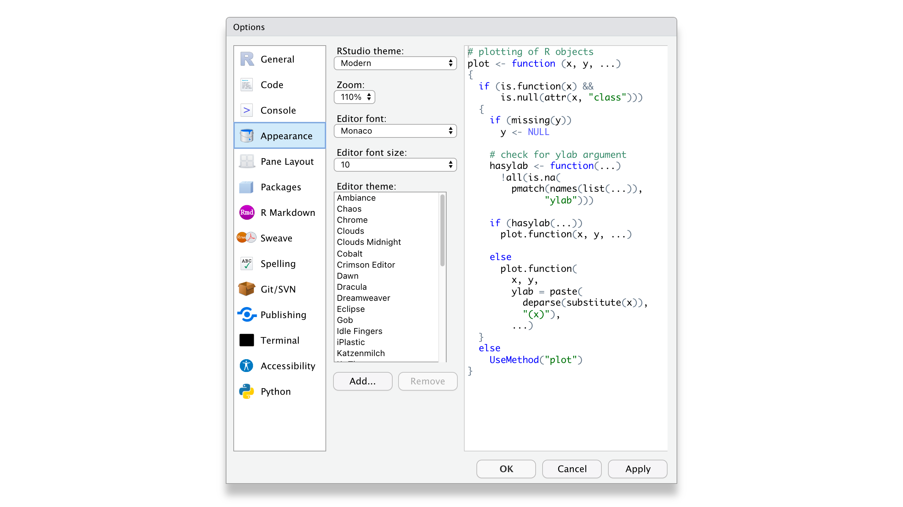
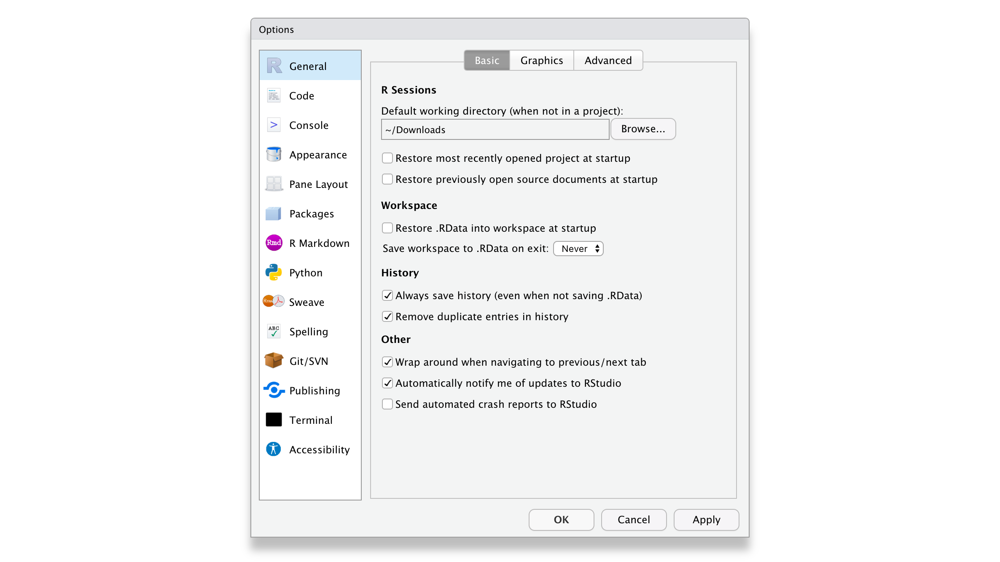

Tutorial #1
This tutorial focuses on getting you started in R and RStudio. R is a programming language that you will write code in and RStudio is a program that makes working in R easier. There are two strategies for working with R and RStudio. The user can either install R and RStudio on their computer and work with them locally OR the user can work with them remotely via an internet browser. In this course, we will work with R and RStudio remotely via PositCloud.
Intended Learning Outcomes
* Understand the difference between R and RStudio
* Become familiar with the main components in RStudio
* Be able to write and run code in the console and in a R Script
* Be able to install add-on packages
* Be able to get help for packages and functions
* Be able to customize RStudio
Introduction to R and RStudio
As previously mentioned, R is a programming language that we will use to write code for working with data. RStudio is an Integrated Development Environment (IDE) for R. RStudio is dependent on R but separate from it. It provides a useful interface for working with R and has several advantages over the default R interface. Think of it as knowing English and using a plain text editor like NotePad to write a book versus using a word processor like Microsoft Word. You could do it, but it would be much harder without things like spell-checking and formatting and you wouldn’t be able to use some of the advanced features that Word has developed. In a similar way, you can use R without RStudio but we wouldn’t recommend it. RStudio serves as a text editor, file manager, spreadsheet viewer, and much more. The key thing to remember is that although you will do all of your work using RStudio for this course, you are actually working with two pieces of software, which means that from time to time, both of them may have separate updates.
RStudio runs on Mac, PC, and Linux machines and provides a simplified interface that looks and feels identical on all of them. While it can be installed on your own computer, for this course you will be asked to login to a shared RStudio Cloud server (PositCloud) from a web browser. There are several advantages to using the web browser application of RStudio Cloud. It allows you to write and access R code wherever you go. It even works on your tablet because it does not require installation. It also makes it much easier to collaborate with others, and since no installation is required, you can work on projects on any device as long as you are connected to the internet. Another significant advantage of using RStudio in the cloud is that you can run time-consuming scripts without bogging down your own device. However, because RStudio Cloud requires an internet connection, it will run slower if your internet connection is not fast or stable.
Guided Tour of RStudio
The interface for working with RStudio both in the cloud or locally is largely the same and consists of 4 window “panes”. Several of the panes are further subdivided into multiple tabs.
Let’s look in more detail at each of these four windows. By default, the upper left pane is the source pane, where you view, write, and edit code from files and view data tables in a spreadsheet format. When you first open RStudio, this pane won’t display until we open a document or load in some data – don’t worry, we’ll get to that soon.
The lower left pane is the console pane, where you can view the output of your coding and computations. It is also possible to write code directly into the console. However, keep in mind that the code you write in the console will run and can create objects that will be saved in the environment, but the code itself won’t be saved. You need to write your code into a script in the source pane to save it, which we’ll cover in more detail in Section 0.3 below.
The right panes have several different tabs that show you information about your code. The most used tabs in the upper right pane is the Environment tab. The Environment tab lists some information about the objects that you have defined in your code.
In the lower right pane are tabs for browsing files, viewing plots, managing R packages, reading help files, and for viewing html documents and presentations. The most used tabs are the Files tab for directory structure, the Plots tab for plots made in a script, the Packages tab for managing add-on packages (see Section 0.4), and the Help tab which displays help pages for R functions and packages. We’ll learn more about the Help tab in Section 0.4.5.
Writing R Code
R is a command based system. We type commands, R translates them into machine instructions, which our computer then executes, and then we often, but not necessarily, get back some output. The commands can be typed into the R console, or else they can be put into a script and run as a batch.
R Console
When learning R, it is usually best to start with typing commands in the R console. When we open RStudio initially, our console will usually look something like this:
R version 4.3.1 (2023-06-16 ucrt) -- "Beagle Scouts"
Copyright (C) 2023 The R Foundation for Statistical Computing
Platform: x86_64-w64-mingw32/x64 (64-bit)
R is free software and comes with ABSOLUTELY NO WARRANTY.
You are welcome to redistribute it under certain conditions.
Type 'license()' or 'licence()' for distribution details.
R is a collaborative project with many contributors.
Type 'contributors()' for more information and
'citation()' on how to cite R or R packages in publications.
Type 'demo()' for some demos, 'help()' for on-line help, or
'help.start()' for an HTML browser interface to help.
Type 'q()' to quit R.
> Notice that at the bottom, there is a single line beginning with >. This is the R console’s command prompt, and it is where we type our commands. We then press Enter, and our command is executed. The output of the command, if any, is displayed on the next line or lines, and then a new > prompt appears.
While R is much more than a simple calculator, a useful way to familiarize yourself with R and the console is to do some simple calculator-like computations. Most of this will work just like you would expect from a typical calculator.
First, click into the console with your mouse, type 10 + 5 into your console and press Enter/Return ↵ on your keyboard. The result should be pretty obvious. Now, type 6 * 15 into your console and press Enter/Return ↵ on your keyboard. Next, type sqrt(25) into your console and press Enter/Return ↵ on your keyboard. This last example demonstrates how functions are called within R. The code sqrt() calls the square root function in R and asks R to compute the square root of the number provided within the parentheses. Now, type calc1 <- sqrt(25) into your console and hit Enter/Return. This time R does not return a value but instead has stored the value in memory by assigning it to a variable. We do this with the assignment operator <-, which is a < symbol followed directly by a - symbol. The <- can be typed by key combination Alt+- (i.e Alt key and minus key together) or Option+- on the Mac. This object is now listed in your Environment pane. Type calc1 into your console and press Enter/Return ↵ on your keyboard, to print the value saved in the object. Quick Note: In the previous commands, we put a space between around the +, *, <- operators. This is a matter of recommended style to improve readability, not a requirement.
R Scripts
Rather than typing R commands into the Console, we typically write short programs, known as “R scripts” that contain the R commands that we wish to execute. This allows for reproducibility because everytime you run your R script you’ll get the same result (assuming the input is the same) or you could give your script to someone else and they’ll get the same result as well.
To create a new R Script, select File, then New File, then R Script from the RStudio menu. A file editor tab will open in the Source panel. R code can be entered here, and buttons and menu items are provided to run all the code (called sourcing the file) or to run the code on a single line or in a selected section of the file.

Next, type the following three lines of commands into your R script or copy and paste the code into your R script and update the code with your responses:
Type the code in the R Script file. Ignore the numbers listed to the left of the code.
myname <- "Your Name"
myfavfood <- "Name of your Favorite Food"
paste("My name is", myname, "and I really like to eat", myfavfood)You may now run each line of your script by clicking on the RUN button, or by pressing the Ctrl + Enter (Cmd + Enter for Macs) keys simultaneously. Notice that R will continue to provide the output in the console, but pressing Enter by itself doesn’t make R run any command.
Let’s save your first R script. Select File, then Save to give your script a name and save it in your working directory. Congratulations! You have created and saved your first R Script file.
Packages and functions
When you install R you will have access to a range of functions including options for data wrangling and statistical analysis. The functions that are included in the default installation are typically referred to as “base R” and you can think of them like the default apps that come pre-loaded on your phone.
One of the great things about R, however, is that it is user extensible: anyone can create a new add-on that extends its functionality. There are currently thousands of packages that R users have created to solve many different kinds of problems, or just simply to have fun. For example, there are packages for data visualization, machine learning, interactive dashboards, web scraping, and playing games such as Sudoku.
Add-on packages are not distributed with base R, but have to be downloaded and installed from an archive, in the same way that you would, for instance, download and install PokemonGo on your smartphone. The main repository where packages reside is called CRAN`, the Comprehensive R Archive Network.
There is an important distinction between installing a package and loading a package.
Installing a package
This is done using the function install.packages(). This is like installing an app on your phone: you only have to do it once and the app will remain installed until you remove it. For instance, if you want to use PokemonGo on your phone, you install it once from the App Store or Play Store; you don’t have to re-install it each time you want to use it. Once you launch the app, it will run in the background until you close it or restart your phone. Likewise, when you install a package, the package will be available (but not loaded) every time you open up R.
Install the
Run in the console
#Type the code below in the console. Ignore the number listed to the left of the code.
install.packages("dslabs")
Install packages from the console only
Never install a package from inside a script. Only do this from the console pane or the packages tab of the lower right pane.
Here are some other packages you’ll want to install for the first two chapters.
Run in the console
#Type the code below in the console. Ignore the number listed to the left of the code.
install.packages("beepr") # for beeps
install.packages("rmarkdown") # for creating R markdown files
install.packages("devtools") # for installing packages from githubThe hash (#) marks everything to the right of it as comment. Using comments can be very useful for annotating your code, and it improves the readability too. It will also help you to remember why/what you done months later, when you return to your code that you have inevitably forgotten!
Once you’ve installed the
Run in the console
# install waffle package. Ignore the number listed to the left of the code.
devtools::install_github("hrbrmstr/waffle")Loading a package
This is done using the library() function. This is like launching an app on your phone: the functionality is only there when the app is launched and remains there until you close the app or restart RStudio. For example, when you run library(devtools) within a session, the functions in the package referred to by devtools will be made available for your R session. The next time you start RStudio, you will need to run library(devtools) again if you want to access that package.
After installing the
Run in the console
library(beepr)You might get some red text when you load a package, this is normal. It is usually warning you that this package has functions that have the same name as other packages you’ve already loaded.
Note
You can use the convention package::function() to indicate in which add-on package a function resides. For instance, if you see readr::read_csv(), that refers to the function read_csv() in the {readr} add-on package. If the package is loaded using library(), you don’t have to specify the package name before a function unless there is a conflict (e.g., you have two packages loaded that have a function with the same name).
Using a function
Now you can run the function beep().
Run in the console
beep()A function is a name that refers to some code you can reuse. We’ll start by using functions that are provided for you in packages, but you can also write your own functions. After the function name, there is a pair of parentheses, which contain zero or more arguments. These are options that you can set. In the example above, the sound argument has a default value of 1, which makes a “ping” sound. Try changing the argument to an integer between 1 and 11.
Run in the console
beep(sound = 8)Tidyverse
We have pre-installed the course workspace with the package
ggplot2 , for data visualisation (?@sec-viz)readr , for data import (?@sec-data)tibble , for tables (?@sec-data)tidyr , for data tidying (?@sec-tidy)dplyr , for data manipulation (?@sec-wrangle)stringr , for string dataforcats , for categorical datapurrr , for repeating things
When you install tidyverse_packages(), but the packages we’ll be using in this book are:
googlesheets4 , for working with Google spreadsheetsreadxl , for Excel fileslubridate , for working with dateshms , for working with timesrvest , for web scraping
Function Help
When you load the
If the package isn’t loaded, use ?package_name::function_name or specify the package in the help() function. When you aren’t sure what package the function is in, use the shortcut ??function_name.
Run in the console
# if the package is loaded
?beepr
help("beepr")
# works whether or not the package is loaded
?beepr::beep
help("beep", package="beepr")
# shows a list of potentially matching functions
??beepCustomize your RStudio Interface
You can customize how RStudio looks to make it work for you. For example, you can adjust the size of the panes by moving the gray lines which separate the four panes. The panes can be minimized or maximized using the icons on the right side of the gray bar at the the top of each pane. You also can change the location of panes and what tabs are shown under
More importantly, you can change the default font, font size, and general appearance of R Studio, including it’s color scheme. Click

Reproducibility
Over the semester, you will be learning how to make reproducible reports using
When you do things reproducibly, others (and most importantly future you) can understand and check your work. You can also reuse your work more easily. For example, if you need to create a report every month with the social media analytics for your company, a reproducible report allows you to download a new month’s data and create the report within seconds. It might take a little longer to set up the report in the first instance with reproducible methods, but the time it saves you in the long run is invaluable.
https://bookdown.org/daniel_dauber_io/r4np_book/setting-up-r-and-rstudio.html#when-you-first-start-rstudio
We recommend that you make the following changes to your RStudio settings to set yourself up for success right from the beginning. To open the Rstudio settings you have to click on
RStudio > Tools > Global Options or press ⌘ + , if you are on a Mac.
RStudio > Tools > Global Options or press Ctrl + , if you work on a Windows computer.

On the first tab, i.e. General > Basic, we should make one of the most significant changes. Deactivate every option that starts with Restore. This will ensure that every time you start RStudio, you begin with a clean slate. At first sight, it might sound counter-intuitive not to restart everything where you left off, but it is essential to make all your projects easily reproducible. Furthermore, if you work together with others, not restoring your personal settings also ensures that your programming works across different computers. Therefore, I recommend having the following unticked:
Restore most recently opened project at startup,
Restore previously open source documents at startup,
Restore .Rdata into workspace at startup
In the same tab under Workspace, select Never for the setting Save workspace to .RData on exit. One might think it is wise to keep intermediary results stored from one R session to another. However, I often found myself fixing issues due to this lazy method, and my code became less reliable and, therefore, reproducible. With experience, you will find that this avoids many headaches.
In the Code > Editing tab, make sure to have at least the first five options ticked, especially the Auto-indent code after paste. This setting will save time when trying to format your coding appropriately, making it easier to read. Indentation is the primary way of making your code look more readable and less like a series of characters that appear almost random.

Sessions
If you have the above settings configured correctly, when you open up RStudio and start writing code, loading packages, and creating objects, you will be doing so in a new session and your Environment tab should be completely empty. If you find that your code isn’t working and you can’t figure out why, it might be worth restarting your R session. This will clear the environment and detach all loaded packages - think of it like restarting your phone. There are several ways that you can restart R:
- Menu:
Session > Restart R Cmd-Shift-F10 orCtl-Shift-F10 - type
.rs.restartR()in the console
Try doing each of these now. Additionally, doing so prior to running any new R script is good practice because it ensures that our script will not have any hidden dependencies, and that any data structures or functions that the code does depend on are created from the code contained in the script.
Footnotes
https://www.rstudio.com/resources/cheatsheets/↩︎